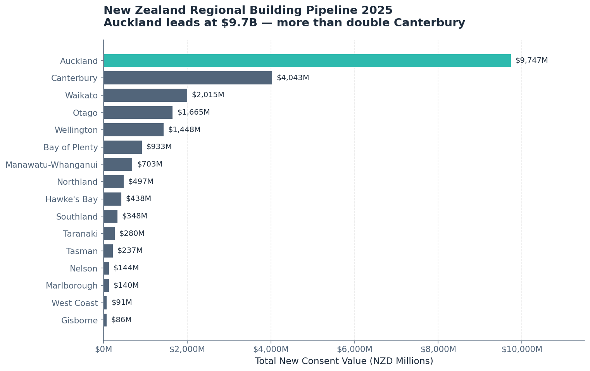
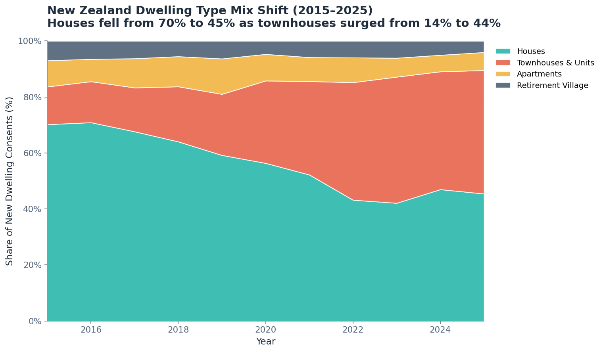
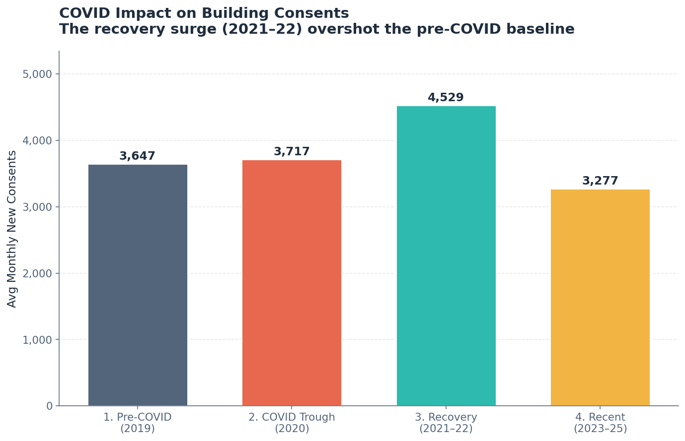
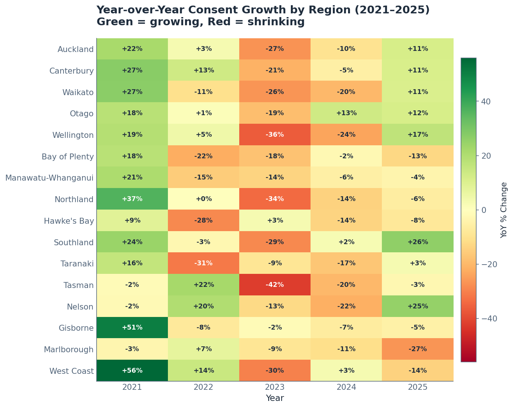
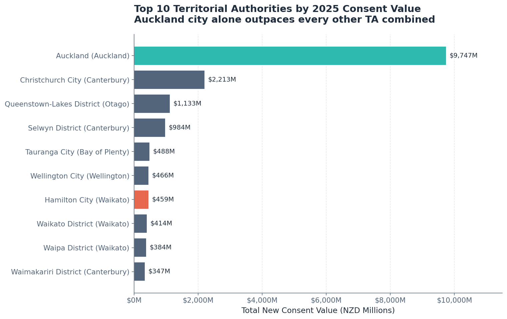
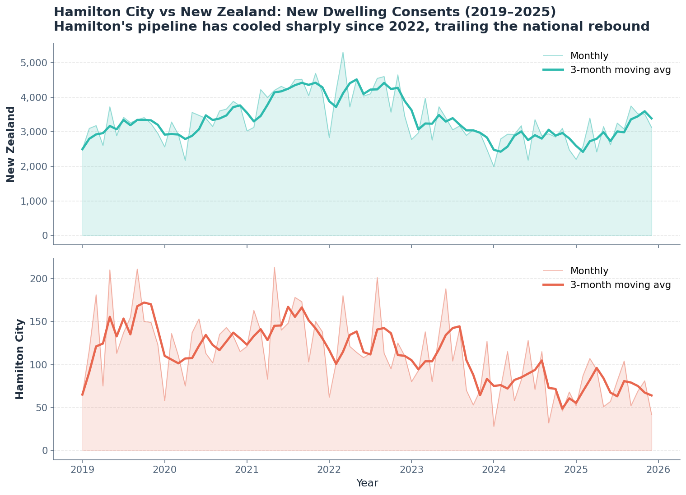
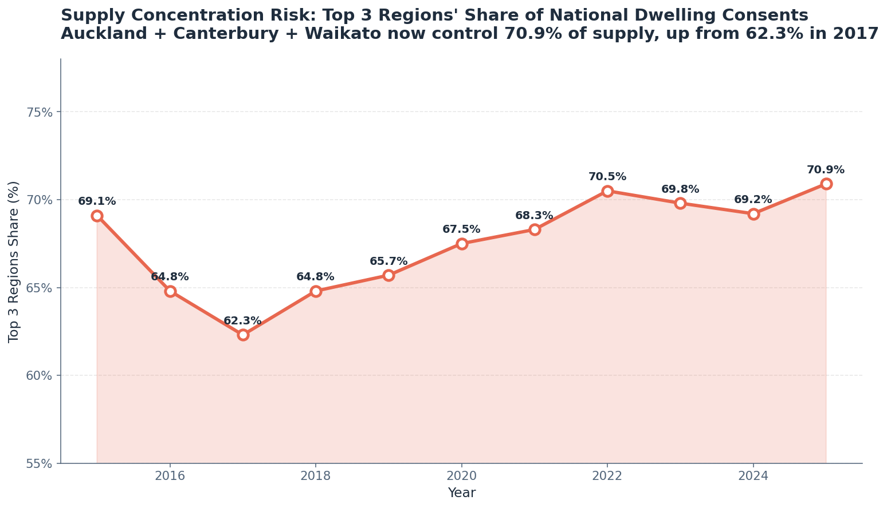
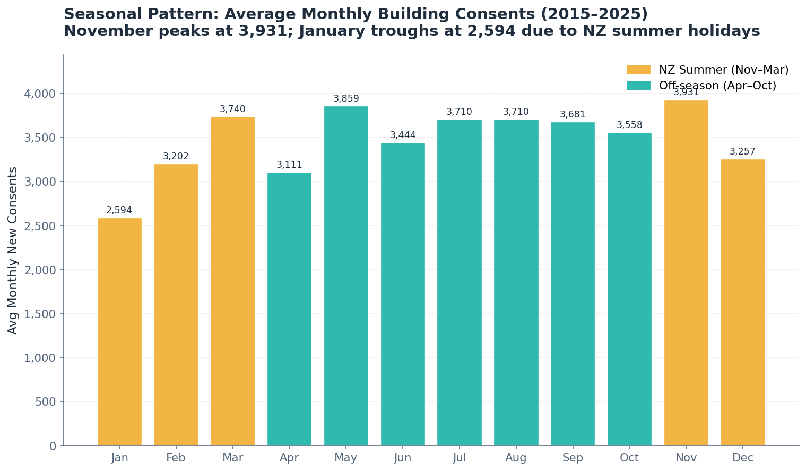
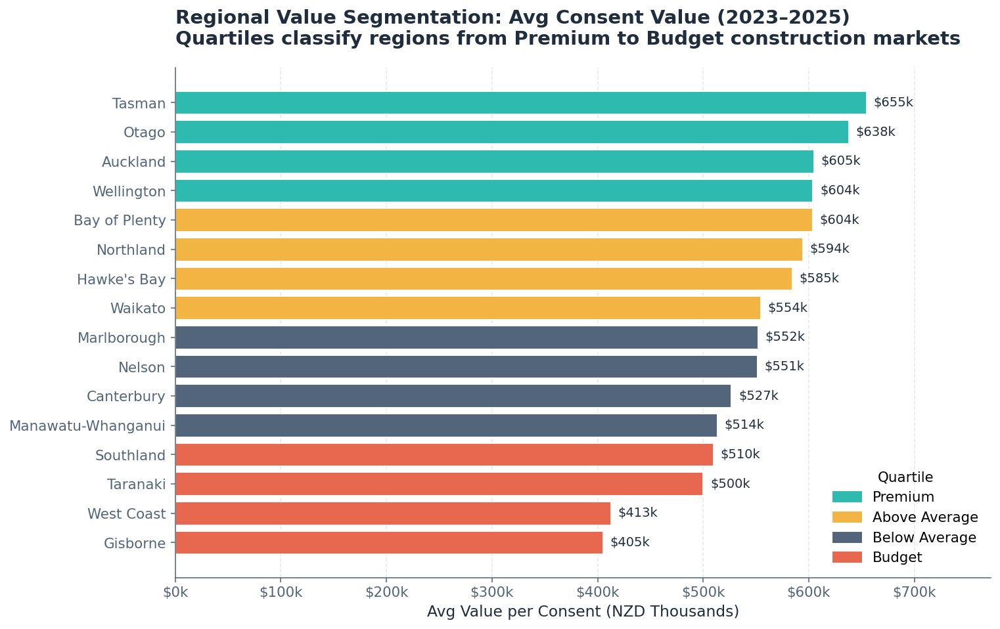

NZ Building Consents: Regional Pipeline, Recovery & Risk Analysis in SQL
Analysing Stats NZ building consent data across 16 regions and 67 territorial authorities to surface construction trends, COVID recovery patterns, dwelling-type shifts, and supply concentration risk.

Project Overview
This project takes the full Stats NZ building consents dataset (December 2025 release) and transforms it into a normalised star-schema SQLite database spanning 1990 to 2025. Ten analytical SQL queries then extract the insights a regional planner, housing analyst, or executive decision-maker would need: where the pipeline is strongest, which regions are growing or contracting, how dwelling types have shifted, and where supply risk is concentrating. The result is a structured, end-to-end SQL case study built to demonstrate dimensional modelling, advanced window functions, and business-framed analytical thinking.
Business Question
Where is New Zealand's building pipeline strongest, how did COVID reshape consent activity, which dwelling types are gaining share, and is the national supply pipeline becoming dangerously concentrated in a handful of regions?
Key Findings
- Auckland dominated the 2025 pipeline with $9,747M in new consent value, more than double Canterbury ($4,043M) and triple Waikato ($2,015M), reinforcing Auckland's outsized role in national construction activity.
- Townhouses overtook standalone houses in 2023 for the first time nationally. Standalone houses dropped from 70.2% of new dwelling consents in 2015 to 45.4% in 2025, while townhouses surged from 13.5% to 44.1%, signalling a structural shift toward higher-density living.
- COVID barely dented national consent numbers — average monthly consents actually rose from 3,647 (2019) to 3,717 (2020). The recovery period (2021–22) spiked to 4,529 per month before pulling back to 3,277 in the recent period (2023–25).
- Supply concentration is increasing — Auckland, Canterbury, and Waikato accounted for 70.9% of all new dwelling consents in 2025, up from 62.3% in 2017. The same three regions have topped the national list for the entire decade.
- Wellington posted the sharpest recent rebound at +17.0% YoY in 2025, after falling 36.3% in 2023 and 23.9% in 2024. Southland (+25.9%) and Nelson (+25.2%) also showed strong recoveries.
- November is the busiest month for consent activity (avg 3,931 consents, 2015–2025), while January is the quietest (avg 2,594), consistent with the NZ construction calendar and summer holiday slowdown.
What Was Analysed
- Regional pipeline and ranking — total consents, value, and floor area by region for 2025, ranked by consent value to show where construction investment is concentrated.
- Year-over-year growth trends — five-year YoY consent change by region using LAG window functions to identify which markets are accelerating or contracting.
- COVID impact and recovery phases — national consent volumes grouped into pre-COVID, trough, recovery, and recent periods to quantify the pandemic's effect on construction.
- Dwelling type mix shift — how the national share of houses vs apartments vs townhouses has changed from 2015 to 2025, showing the move toward medium-density housing.
- Seasonal patterns — average monthly consent activity by month-of-year to reveal peak and trough periods for council workload planning.
- Territorial authority ranking — top 10 councils by consent value with average consent size metrics, joining across fact and dimension tables.
- Hamilton deep dive — monthly dwelling consent trends for Hamilton City with a 3-month moving average, compared to the national average for local relevance.
- High-value consent analysis — NTILE-based quartile classification of regions by average consent value, identifying premium vs budget construction markets.
- Supply concentration risk — tracking the top 3 regions' share of national dwelling consents over a decade to assess pipeline diversification.
- Executive summary view — a reusable SQL view delivering total consents, value, QoQ and YoY changes, and the top region for any quarter.
Project Summary
The analytical design is deliberate: start with a broad regional overview, then progressively drill into growth trends, COVID disruption, structural shifts in dwelling types, local deep dives, value segmentation, and strategic concentration risk. The final executive view ties everything together as a reusable reporting layer. That progression demonstrates both technical SQL fluency and the ability to frame analysis around the questions a decision-maker would actually ask.
Skills Demonstrated
- SQL (SQLite)
- Star schema design
- Window functions (LAG, RANK, NTILE)
- Moving averages (ROWS BETWEEN)
- CTEs & subqueries
- Time-series analysis
- YoY / QoQ calculations
- Executive reporting views
- Python (ETL / data loading)
Data & Tools
- Source: Stats NZ Building Consents Issued, December 2025 release
- Coverage: 1.9M+ fact rows spanning 1990–2025 across 16 regions and 67 territorial authorities
- Database: SQLite star schema with 4 dimension tables and 2 fact tables
- ETL: Python script transforms long-format CSVs into normalised, pivoted fact tables
Analysis Highlights

Dwelling Type Mix Shift - Standalone houses fell from 70% of new dwelling consents in 2015 to 45% in 2025, while townhouses surged from 14% to 44%, marking a structural move toward higher-density living.

COVID Impact and Recovery - National consents barely dipped during the trough, then spiked during 2021-22 recovery before pulling back to 3,277 per month in the recent period as interest rates bit.

YoY Growth Heatmap - A LAG-based view across regions and years exposes the post-2022 contraction and the 2025 rebound led by Wellington (+17%), Southland (+26%), and Nelson (+25%).

Top 10 Territorial Authorities - Auckland Council dominates the council ranking, but Hamilton City still earns a clear top-10 placement, anchoring the local deep dive that follows.

Hamilton Deep Dive - A 3-month moving average smooths the noisy monthly series and highlights how Hamilton's pipeline tracks the national cycle while keeping a distinct local rhythm.

Supply Concentration Risk - The top three regions now account for 70.9% of all new dwelling consents, up from 62.3% in 2017, flagging a national supply pipeline that is increasingly concentrated.

Seasonal Patterns - November is the busiest month at 3,931 average consents while January drops to 2,594, mirroring the NZ construction calendar and council workload cycle.

Value Quartiles (NTILE) - An NTILE(4) classification segments regions into premium and budget construction markets, revealing where average consent values run highest.
Why This Project Is a Strong Portfolio Piece
This case study goes beyond writing SELECT statements. It demonstrates end-to-end analytical engineering: designing a normalised star schema, building an ETL pipeline to transform messy government CSV data, writing 10 business-framed queries that use advanced SQL features (window functions, CTEs, NTILE, moving averages, executive views), and packaging the results with real findings grounded in New Zealand's construction economy. The project shows the kind of structured, insight-driven SQL work that data analyst and BI roles require.